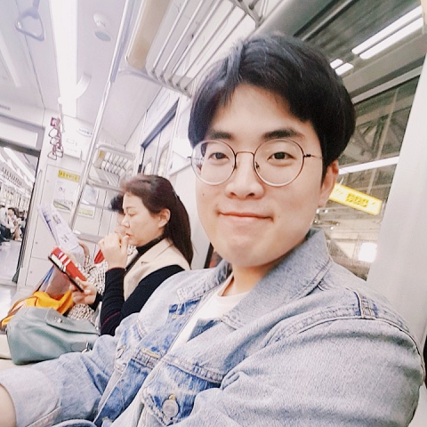

대외 활동
3D 프린팅 IoT 융합 창업캠프
2016.10.28 ~ 2016.10.29
대외활동 개요
인문, 상경 계열의 학생들과 공학 계열 학생들이 함께 힘을 합쳐 진행한 창업캠프로서, IoT에 대한 새로운 기술 및 아이디어를 주제로 Brain Storming을 통하여 아이디어를 선정 및 구현이 목표였다. 구현은 3D프린팅을 이용하여 작은 형태로 아이디어를 구체화 시켰다.
역할
- 브레드보드 및 아두이노(우노) 설치작업
- 하드웨어 기능작동을 위한 S/W 코딩
사용 언어
- Arduino
- C/C++
활동사진 및 수료증 확인하기
교내 프로그래밍 대회
2017.09.23
대외활동 개요
가톨릭대학교에서 진행한 프로그래밍대회로서 ACM-ICPC 지역 예선을 겸하여 진행한 대회다. 총 32팀이 참석하였으며, 이 중 상위 2팀이 ACM-ICPC 본선에 진출했다.
주요성과
교내프로그래밍대회 은상 수상
사용 언어
- C/C++
수상내역 확인하기
CUK Programming Contest
주최자자격
2018.3.30
대외활동 개요
삼성의 후원을 받아 개최한 프로그래밍 대회로서 대회 방식과 규칙 및 진행 등 모든 필요 사항을 총괄하여 담당했다.
역할
- 대회 개최 총괄 및 참가자 관리
포스터 및 사진 확인하기
Education
-
가톨릭대학교 성심교정컴퓨터정보공학부2013.03 ~ 2019.02
-
UIC-Lab가톨릭대학교 양정진 교수님 산하 연구실2017.06 ~ 2018.07
구사언어
- 한국어 (모국어)
- 영어 (원활한대화)
취미
- 요리
- 게임
- 수제맥주마시기